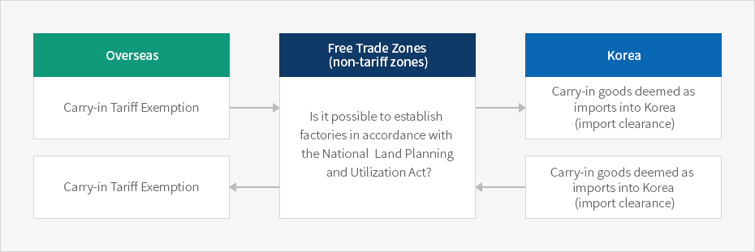
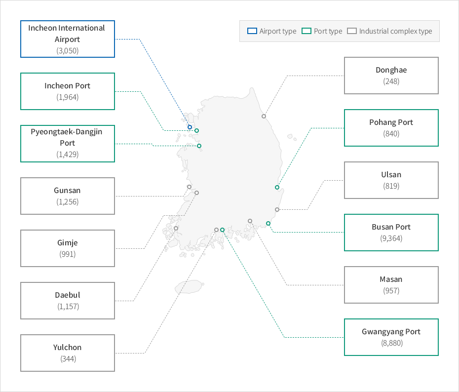

Free Trade Zones
- Home
- 투자의 기회
- Foreign-invested Company Priority Zones
- Free Trade Zones
Industrial locations consist of free economic zones, foreign investment zones, free trade zones, and other zones established to support foreign investors. Locations are offered through leases or sales. If certain requirements are met, tax reductions or exemptions may be applied to companies located in these zones. In addition, some restrictions prescribed by laws may be lifted in these zones.
Free trade zones are special zones that guarantee more freedom in manufacturing, logistics, distribution, and trade. Foreign investors receive various benefits, such as tax exemptions, rental fee reductions, and supportive facilities, in accordance with related laws. Free trade zones act as tariff reserve areas, which means companies will find more advantages for import and export activities in these zones than in any other region.
Overview of Free Trade Zones


-
Overseas
- Carry-in Tariff Exemption
- Carry-in Tariff Exemption
-
Free Trade Zones(non-tariff zones)
- Is it possible to establish factories in accordance with the National Land Planning and Utilization Act?
-
Korea
- Carry-in goods deemed as imports into Korea(import clearance)
- Carry-in goods deemed as imports into Korea(import clearance)

※ Source: Study on the Reinforcement of Special Economic Zones for Attracting Foreign Direct Investment, Korea Institute for Industrial Economics and Trade, 2013
Free Trade Zones in Korea

-
Airport type
- Incheon International Airport(3,050)
-
Port type
- Incheon Port (1,964)
- Pyeongtaek-Dangjin Port(1,429)
- Pohang Port (840)
- Busan Port (9,364)
- Gwangyang Port (8,880)
-
Industrial complex type
- Gunsan (1,256)
- Gimje (991)
- Daebul (1,157)
- Yulchon (344)
- Donghae (248)
- Ulsan (819)
- Masan (957)

※ Source: Study on the Reinforcement of Special Economic Zones for Attracting Foreign Direct Investment, Korea Institute for Industrial Economics and Trade, 2013